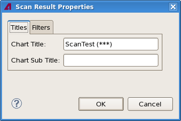
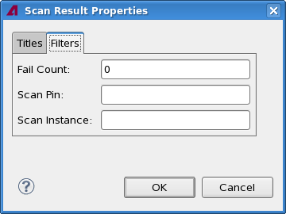

Scan view properties
The Scan Result Properties dialog lets you specify certain aspects of the look of a scan view chart, including the labels and filter settings.
The dialog has two tabs, both of which are described below.
Titles

The Titles tab contains these elements:
- Chart Title: This field contains the title displayed at the
top of the chart.
By default, this is the test name and the test number in parentheses.
- Chart Subtitle: The subtitle displayed beneath the title of
the chart.
By default, this is the grouping of the displayed tests. If there is no grouping, the field is empty.
Filters

The Filters tab contains these elements:
- Fail Count: The minimum number of fails required for a scan chain to be displayed. Scan chains with fewer fails than this number are not shown in the scan view.
- Scan Pin: Only scan chains for this pin are displayed. If this field is left empty, scan chains for all pins are displayed.
- Scan Instance: Only scan chains for this instance are displayed. If
this field is left empty, scan chains for all pins are displayed.
This setting has an effect only if "Group by Instance" is active.
Functional changes
- Introduced in SmarTest 7.2.2
- SmarTest 7.3.2: Added scan instance filter.